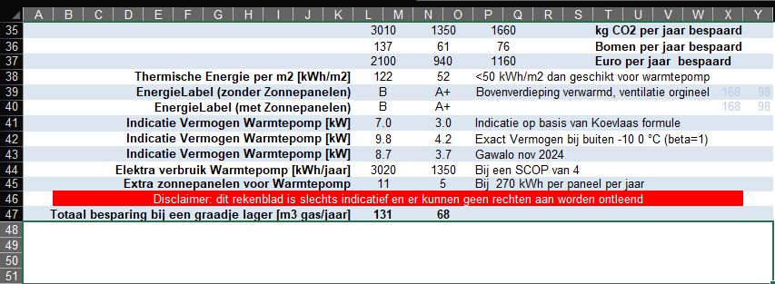
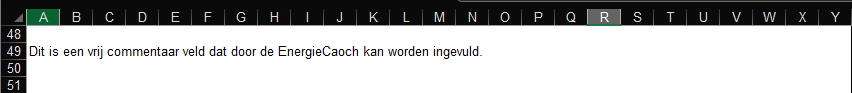
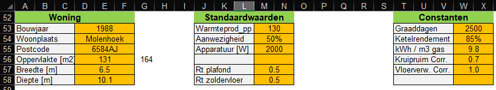
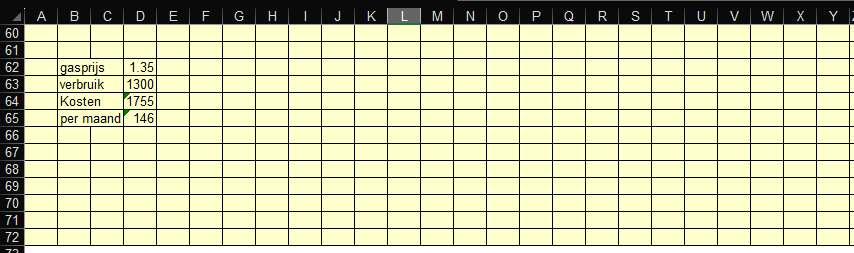

Ten slotte ook nog wat informatie over CO2, bomen, Euro's en de warmtepomp.

Het energielabel wordt berekend op basis van berekend energieverbruik en een aantal forfaitaire waarden. Deze rekenwijze is nog niet geheel in overeenkomstig met de standaard gebruikte methode, waardoor dit model het Energielabel iets te goed inschat.
De benodigde capaciteit van een warmtepomp is op 3 verschillende manieren berekend. Normaal gesproken behoren alle methoden ongeveer gelijk uit te komen, wees extra voorzichtig als een of meer van deze methoden ernstig afwijken. In dit geval 7.0 en 9.8 verschillen behoorlijk van elkaar.
Dit is berekend op basis van het gasverbruik zonder het gasverbruik benodigd voor het warm tapwater.
De grens van 50 kWh/m2 op jaarbasis, is een ruwe indicatie of het huis geschikt is voor een warmtepomp. Deze waarde is het gemiddelde dat is berekend in de "Standaard en Streefwaarden : 43 .. 60 kWh/m2 op jaarbasis). Naast deze waarde is de aanvoertemperatuur van het water (in belangrijke mate bepaald door het afgiftesysteem) van groot belang, immers hoe hoger deze moet zijn, hoe minder rendabel een warmtepomp zal zijn.
Bij deze woning en in de huidige status kun je 131 m3 gas per jaar besparen door een graadje lager te stoken.
Leuk is ook om te zien dat als je alle maatregelen neemt het veel minder oplevert als je een graad lager stookt.
Als we het berekende gasverbruik 1450 m3 verminderen met een graadje lager 131 m3, dan komen we uit op 1319 m3. Bij deze woning klopt het berekende verbruik wel akelig nauwkeurig met het werkelijk verbruik (1300m3).

Dit zijn de opgezochte en berekende waarden van de opgegeven woning.
Hier kun je bijvoorbeeld snel zien of de breedte en diepte van de woning overeenkomen met de feitelijke situatie.
De gebruiksoppervlakte in het BAG register is niet gelijk aan het verwarmde oppervlakte. Het betreft hier een hoekwoning, die vaak een aangebouwde garage hebben. In het BAG register telt de oppervlakte van de garage mee, maar in dit model veronderstellen we dat de garage geen verwardde ruimte is. In het blad Details kun je dit veranderen.

Deze velden zijn bedoeld om zelf te rekenen.
Het is goed om te weten dat het tabblad beveiligd is en je dus alleen in te vullen velden kunt veranderen.
